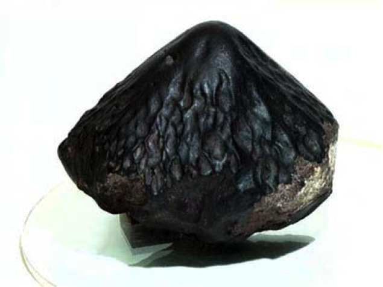

|
The atmospheric erosion of meteors is a splendid example of the reshaping of a solid object due to its motion through
a fluid. Motivated by meteorite samples collected on Earth that suggest fixed orientation during flight–most notably
the strikingly conical shape of so-called oriented meteorites–here the hypothesis that such forms result from an
aerodynamic stabilization of posture that may be achieved only by specific shapes, is explored. The laboratory scale
experiment is conducted for exploring systematic static stability tests on cones of varying apex angles in fast flows,
and the resulting map of the orientational equilibria and their stability shows how oriented flight emerges through
blue-sky and pitchfork bifurcations. A 2D mathematical model has been developed, and is being compared with the
experimental results. Armed with the simplified 2D model of oriented meteorites (with a conical shape), an isosceles
triangle is considered in order to calculate its flow wake structure using free streamline theory. Preliminary
comparisons with experiment appear very promising.
|
 |